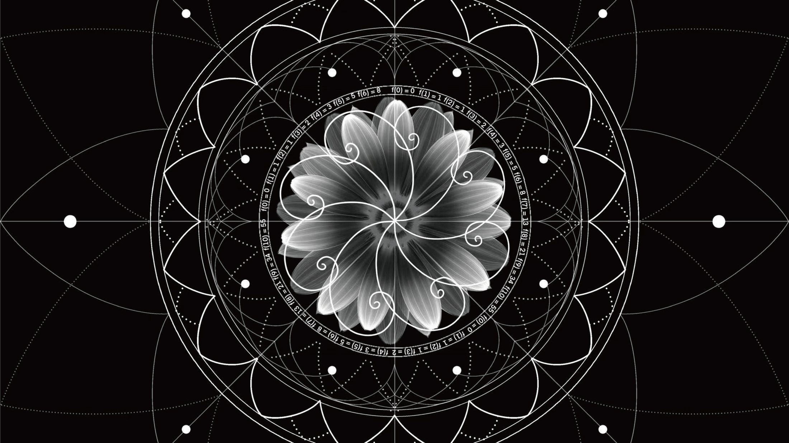
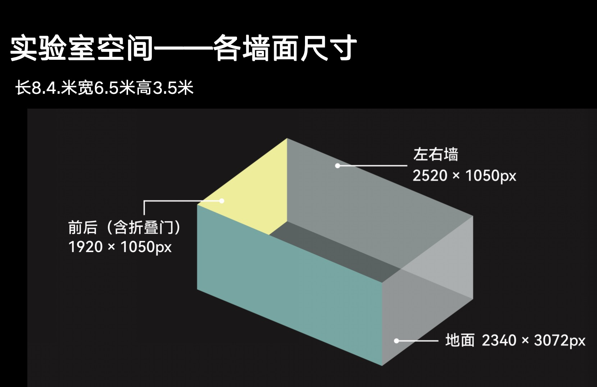
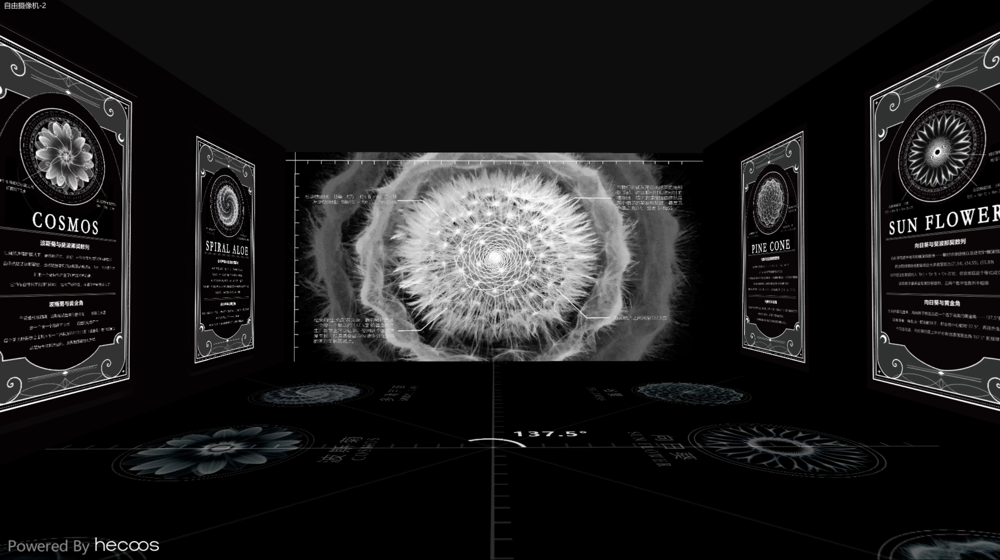
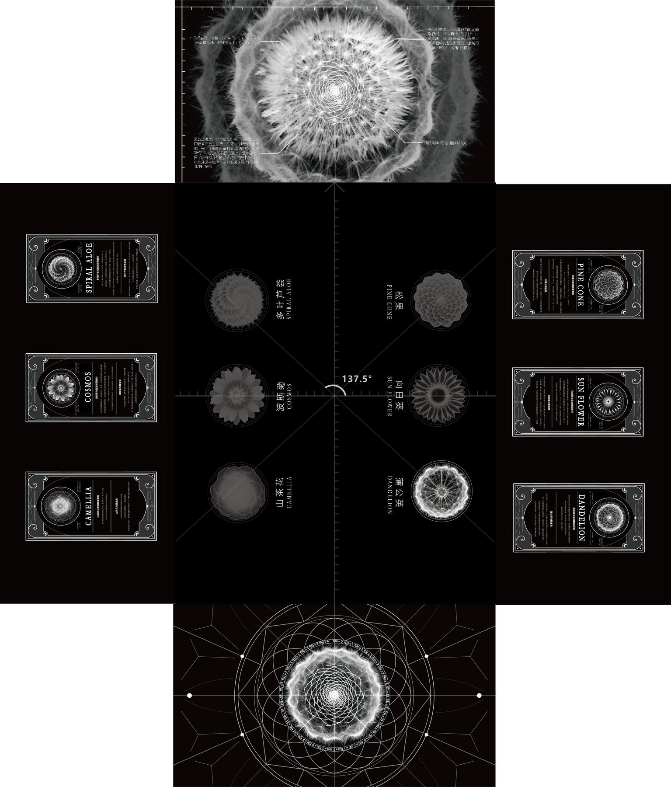
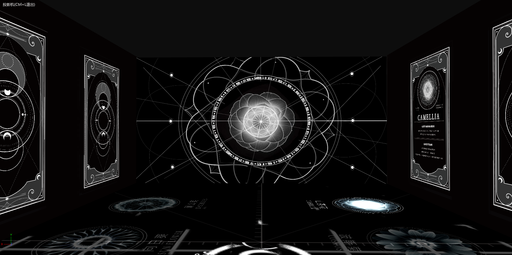
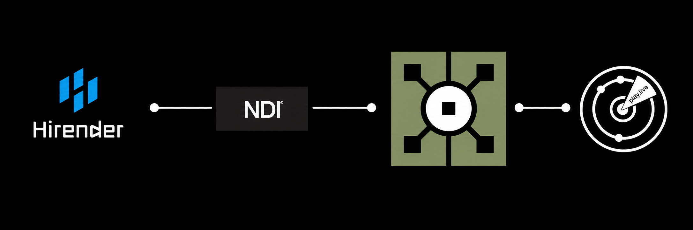

01 Project Thesis
前言
斐波那契数列以无可辩驳的数学合理性，自然呈现出符合人类审美经验的模式。它提示我们，持久的美往往根植于高效、简洁和合乎逻辑的天然秩序。
在与现实世界同步流转的时光里，斐波那契植物以精确的数学语言书写生命的生长节奏。新生的叶片与种子既是过去结构的延续，也是未来排列的预告。
当观者步入空间，现实时间、植物生命轮回与数列的数学节奏开始交融。人不再只是外部观看者，而是成为嵌入系统中的变量，与生命的秩序直接对话。
02 Research
项目调研
User Persona
Scientific Basis
向日葵 / 大样本旋臂计数证据
真实花盘旋臂高频出现斐波那契数，同时保留非斐波那契变体，说明规则来自动态发育。
DOI 10.1098/rsos.160091补充依据
Vogel 1979 提出的向日葵头部模型解释黄金角与空间填充关系。DOI 10.1016/0025-5564(79)90080-4
松果 / 8:13 叶序实证
球果鳞片排列常见 8:13 等斐波那契型模式，适合作为“植物章节”的高可信知识入口。
DOI 10.5586/asbp.2015.025补充依据
Okabe et al. 2021 用二步机制解释螺旋叶序如何生成 5/8、8/13 等序列。DOI 10.1016/j.jtbi.2020.110484
多叶芦荟 / 黄金角空间最优性
莲座型密排结构说明 137.5° 如何减少叶片重叠，并提升持续生长中的空间分配效率。
DOI 10.1038/srep15358补充依据
Reinhardt et al. 2003 说明螺旋结构与生长素位置调控有关。DOI 10.1038/nature02081
蒲公英 / 菊科头状花序发育秩序
蒲公英花头与冠毛的放射组织体现菊科头状花序从中心向外生成的几何化秩序。
DOI 10.3390/plants9101258补充依据
Zoulias et al. 2019 说明生长素在菊科花头模式形成中的作用。DOI 10.1104/pp.18.01119
波斯菊 / 放射状花序模块化
边缘花与中央盘状花构成模块化结构，适合说明生命形态中“边缘-中心”的组织逻辑。
DOI 10.1111/nph.19590补充依据
Li et al. 2019 从基因表达角度说明波斯菊花型发育的调控机制。DOI 10.3390/ijms20102503
山茶花 / 连续器官发生与层叠重瓣
山茶花的层叠不是静态装饰，而是花器官身份与边界在发育过程中被重新组织的结果。
DOI 10.1186/s12870-014-0288-1补充依据
Tsou 1998 梳理山茶类群早期花器官发育起始模式。DOI 10.2307/2446480
03 Interaction Logic
交互逻辑
观众路径与脚步触发压缩为同一条体验线：被光引入、识别索引、脚步选择、空间回应。
被光引入
观众进入黑色空间，被地面光点和坐标原点吸引。
识别索引
地面出现 XY 轴、137.5° 黄金角与六种植物图标。
脚步选择
观众踩到植物图形，系统识别当前植物 ID。
空间回应
主墙、侧墙卡牌、地面与打卡墙同步切换。
04 Space Scale
空间尺寸
实验室长 8.4 米、宽 6.5 米、高 3.5 米。这个条件决定了素材必须拆分到不同投影面，并分别承担导航、叙事、解释与留存功能。

左右墙
承载植物卡牌与知识注释，让观众理解被触发章节的科学信息。
前后墙
承载主视觉与打卡图腾，把植物形态、几何结构和拍照结果放大。
地面
承载植物索引、137.5° 黄金角与脚步热区，负责观众选择。
05 Design Notes / Space Effect
设计说明 / 空间效果



06 Tech Flow
技术链路
雷达识别观众位置，TouchDesigner 判断区域与植物 ID，NDI 传输实时画面，Hirender 完成多屏播控输出。
识别观众进入、停留和区域移动。
判断区域和植物 ID，切换实时视觉。
把实时画面传输给现场播控系统。
完成主墙、侧墙、地面与打卡墙输出。

07 Outcome
成果展示
08 Reflection
复盘
设计需要从规则与流程里生长出来，并不断改进。
身体不只是观看者
身体不只是观看者，而是内容选择器。
跨屏必须统一
地面、主墙、卡牌、打卡墙必须被同一个植物 ID 统一驱动。
触发必须被理解
沉浸式体验的重点不是画面堆满，而是触发逻辑能被观众理解。